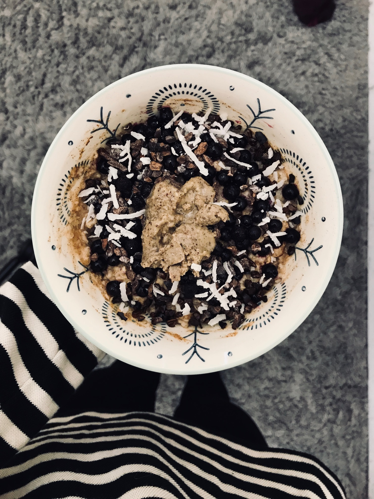

|
||||||
| Home | Sitemap | Contact Me | About Me | Recipes | Blogposts | Links and Resources |
Oatmeal has to be my all-time favorite food – the amount of combinations you can make with this food is amazing. And you better believe I use toppings galore when it comes to oats. In general, breakfast is my favorite meal of the day – oatmeal, pancakes, waffles, yogurt, granola, muffins, you name it. I’m definitely more of a sweet person and so breakfast always leans more on the sweet than savory side. To spread my oatmeal love check out these 4 favorite oatmeal combinations, ready whip up in the morning in the microwave or on the stove! **I prefer stove cooked oats in milk instead of water for a creamier texture, but the microwave is much quicker and less clean-up!
For each add 1 part oats to 2 parts water or milk and cook on the stove or microwave for 1.5-3 minutes. Stir in ingredients before cooking and add toppings after. Feel free to get creative with toppings in any way you like! My favorites are nuts, seeds, dried fruit, chopped up protein bars, nut butter, granola, and maple syrup!
1. Maca Vanilla

If you’ve never tried Maca powder it smells and tastes similar to butterscotch. I love this superfood and the taste it adds to my oatmeal, especially with a splash of vanilla! Maca is a superfood said to balance out hormones, and while this is important, I eat it mostly for taste!
Ingredients:
Oats and water/milk
1 tablespoon maca powder
Splash of vanilla
Suggested Toppings: berries, coconut, and cashew butter
2. Ginger Molasses Pear

One of my favorite comfort foods is molasses. I love molasses cookies and it always reminds me of the holidays and family time. This bowl of oats is a delicious version of those molasses cookies and is perfect for a rainy day or to kick start any morning!
Ingredients:
Oats and water/milk
1 tablespoon molasses
1 teaspoon ginger
1 tablespoon cinnamon
Dash of nutmeg
Splash of vanilla
Suggested Toppings: pecans, pear, and coconut
3. Chocolate Nut Butter
Chocolate all day every day! If I could incorporate chocolate into every meal I would. I love starting my day with a warm bowl of oats that tastes like a chocolate bar with nut butter melted in the middle. This is sure to get you out of bed in the morning and give you something great to start your day. Plus cocoa powder is great energy booster! **Peep my puppy eyeing my delicious breakfast
Ingredients:
Oats and water/milk
1 heaping tablespoon cocoa powder
1 tablespoon maple syrup
Suggested Toppings: nut butter, blueberries, and cocoa nibs
4. Carrot Cake

Recently I’ve fallen in love with carrot cake. And so when I figured out that oats could taste like carrot cake, I feel in love with those too. This bowl of oats packs in lots of nutrients from the carrots and is very filling and satisfying to get you started with your day. Also a great dinner if you’re in a rush and are just feeling a bowl of oats!
Ingredients:
Oats and milk (this one works best soaked overnight or made on the stove – both versions made with milk)
1 cup grated carrot
1 tablespoon maple syrup
Splash of vanilla
1 tablespoon cinnamon
1 teaspoon ginger
2 dashes of nutmeg
Suggested Toppings: walnuts, raisins, hemp seeds, and more cinnamon